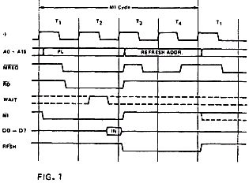
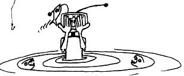

Nascom Journal |
Dezember 1981 · Ausgabe 11/12 |
Treiberleistung aufbringen, um in einem größeren System viele andere ICs anzusteuern, müssen die Busleitungen durch Treiber gepuffert werden, Für unidirektionale Leitungen (Daten fließen nur in eine Richtung), also Adreßleitungen (A0-A15) und Controlleitungen (MREQ, IORQ, RD, WR, RFSH, M1, HALT, BUSAK), reicht es aus, wenn die Leitungen in einer Richtung gepuffert werden. Für den bidirektionalen Datenbus ist es nun notwendig, daß die Daten in 2 Richtungen gesendet werden können. Die Treiberbausteine müssen also einmal Daten senden oder Daten empfangen können. Dieses Umschalten, in welche Richtung die Treiberbausteine die Daten puffern sollen, wird nun durch das Signal „DBDR“(Data Bus Drive) gesteuert. Während WR-Zyklen ist DBDR auf high. Anhand der Schaltung der Buffer-Karte ist ersichtlich, daß bei DBDR=high der Treiberbaustein IC2 gesperrt ist, während die Treiber IC1 und IC8 Daten vom Nascom auf den Nasbus weitersenden. Nur wenn man von einer der Speicherkarten oder einer I/O-Platine die CPU lesen will (RD-Zyklus), und während des INTACK Zyklus wird die DBDR-Leitung auf „low“ gesetzt. Dann sperren IC1 und 8. Der Treiber IC2 gibt die Daten vom Nasbus zum Nascom weiter. Normalerweise liegt „DBDR“ auf logisch high. Das „low“ Signal wird auf der Karte generiert, von der die CPU lesen will. Dazu gibt es auf jeder Karte eine Decodierlogik, die erkennt, ob die CPU von dieser Karte liest. Sie erzeugt, wenn MREQ, bzw. IORQ und RD aktiv sind, durch ein IC mit Open-Collector Ausgang auf DBDR „low“. (Beim IORQ wird getestet, ob ein Pheripheriebaustein auf der Karte den Interrupt ausgelöst hat und ob M1 und IORQ aktiv sind). Da es möglich ist, daß sich RAM-Speicher mit dem 4K-Memory Block auf der Nascomkarte überlagern, wird durch die Decodierlogik auf den Memorykarten auch das MEXT Signal abgefragt, und bei Lesezugriff auf diesen Speicherblock wird das DBDR nicht auf low geschaltet.
Zum Schluß sei noch bemerkt, daß bei BUSAK und RESET aktiv die Datenleitungen in beide Richtungen (unabhängig von DBDR) gesperrt sind.
Der M1-Zyklus (Instruction OP-Code Zyklus) ist der CPU-Zyklus, in dem sich die CPU aus dem Speicher den nächsten auszuführenden Befehl (OP-Code) holt und anschließend noch einen Refresh-Zyklus durchführt. Der Ablauf ist in Fig.1 dargestellt.
Während Taktzyklus 1 (T1) legt die CPU den Wert des Programmzählers PC auf den Adreßbus. (PC ist ein internes 16bit Register der CPU, welches auf die Speicherzelle zeigt, in welcher der nächste abzuarbeitende Befehl steht). Gleichzeitig wird der M1-Ausgang der CPU aktiv (deshalb M1-Zyklus). Anschließend werden RD und MREQ aktiv. Diese beiden Kontrolleitungen zeigen an, daß die CPU aus dem Speicher ein Byte lesen will. Am Anfang von T3 wird nun das Byte, also der OP-Code, vom Datenbus in die CPU übernommen. Das Byte, welches die CPU nun über den Datenbus erhalten hat, wird nun während der folgenden zwei Takt-Zyklen (T3 und T4) analysiert und intern ausgeführt. Während die CPU damit beschäftigt ist, intern den Befehl zu verarbeiten, kann extern der Refreshzyklus ablaufen. Damit werden Daten in dynamischen Speicherzellen aufgefrischt, die sonst verloren gehen würden.
Um Gottes Willen, wieder nichts! Es muß heißen:
10EA FE statt EE (CP statt XOR) Sonst ist A überschrieben.
Mary Jo Kostya, Frankfurt

| Seite 23 von 55 |
|---|